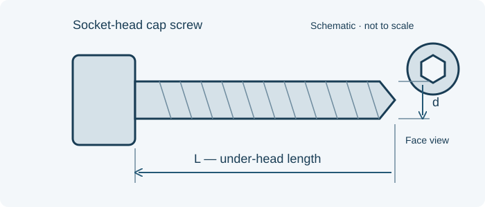

// TECHNICAL RESOURCES
MS16996 fine-thread stainless socket screws.
Find selected stocked MS16996 UNF-3A stainless socket-head cap screws and compare nominal threads and under-head lengths.
// DIMENSIONS & PART IDENTIFICATION
Socket-screw length and nominal thread

Schematic only; not to scale. Letter labels are keys for this illustration. Use the applicable part specification for dimensions, tolerances and measurement conventions.
// PART IDENTIFICATION
Fine-thread stainless socket-head screws
MS16996 identifies hexagon-socket-head cap screws in corrosion-resistant steel with UNF-3A threads. The selected unsuffixed stocked entries are passivated.
// STOCKED SELECTION
Stocked MS16996 part numbers
Selected stocked configurations are listed below. Dimensions are nominal identification references in inches; use the controlling specification and drawing for full tolerances and acceptance requirements.
No matching entries. Clear the filters or try a shorter search.
| Part number | Thread | Nominal under-head length (in) | Configuration | Stock status | Request pricing |
|---|---|---|---|---|---|
| MS16996-2 | 0-80 UNF-3A | 3/16 | Passivated CRES | Stocked item | Quote MS16996-2 → |
| MS16996-14 | 10-32 UNF-3A | 1 | Passivated CRES | Stocked item | Quote MS16996-14 → |
| MS16996-12 | 10-32 UNF-3A | 3/4 | Passivated CRES | Stocked item | Quote MS16996-12 → |
| MS16996-10 | 10-32 UNF-3A | 1/2 | Passivated CRES | Stocked item | Quote MS16996-10 → |
Stocked items are subject to prior sale. Request a quote to confirm current availability and lead time.
// SIZE SELECTION
A small dash number can identify a small diameter
MS16996-2 is a 0-80 by 3/16-inch selection. MS16996-10, -12 and -14 use 10-32 threads with different lengths.
Use the nominal under-head length for identification; full length limits, head geometry and thread-length requirements remain controlled by the drawing.
// FAMILY COMPARISON
Compare the full requirement
MS16995 uses coarse threads and a different size table. NAS1352 is also a separate coarse-thread family. Keep the thread series, class and length together when reviewing a proposed alternate.
// STANDARD STATUS
MS16996 and NASM16996
The legacy MS16996 document was canceled on June 30, 1998 and names NASM16996 as its successor. Provide the complete part callout, governing issue, quantity, required date and documentation requirements.
// BUYER CHECKLIST
Prepare the requirement for quotation
- Complete designation, including all material, finish and locking suffixes.
- Quantity, required delivery date and controlling drawing or specification issue.
- Required certificates, source restrictions and lot traceability.
// SOURCE WITH WEBSON
Have a part number or bill of material?
Send the complete designation, quantity, required delivery date and documentation requirements. Webson will review your requirement for quotation.